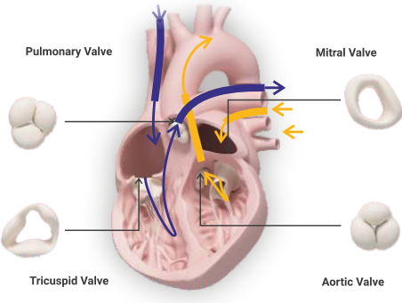

Mechanical Valve
A man-made heart valve made from durable materials, designed for long-term use.
Mitral Regurgitation
A condition where the mitral valve leaks, allowing blood to flow backward into the left atrium.
Mitral Valve
The valve between the left atrium and left ventricle that ensures unidirectional blood flow.
Mitral Valve Prolapse
A condition where the mitral valve leaflets bulge into the left atrium during contraction.
Pacemaker Lead
A wire that connects a pacemaker to the heart, delivering electrical impulses to regulate heartbeat.
Paravalvular Leak
Leakage of blood around the edges of a valve prosthesis.
Paravalvular Regurgitation
Leakage around a valve prosthesis causing backward blood flow.
Percutaneous Valve Replacement
Valve replacement procedure performed through a catheter-based approach.
Post-Dilatation
Expanding a valve or vessel with a balloon after initial placement.
Postoperative Monitoring
Observing a patient's condition after surgery to ensure proper recovery.
Pre-Dilatation
Expanding a valve or vessel with a
balloon before device implantation.
Prosthetic Valve
An artificial valve used to replace a damaged heart valve.
Pulmonary Hypertension
Increased blood pressure in the lungs’ arteries.
Pulmonary Valve
The valve between the right ventricle and pulmonary artery that controls blood flow to the lungs.
Right Ventricle
The lower right chamber of the heart that pumps deoxygenated blood to the lungs.
Right Ventricular Outflow Tract
(RVOT)
The passageway through which blood flows from the right ventricle into the pulmonary artery.
Self-Expanding Valve
A valve that expands on its own once deployed from its delivery system.
Stenotic Valve
A valve that is narrowed and does not allow normal blood flow through it.
Structural Heart Disease
A group of heart conditions involving abnormalities in the heart’s structure.